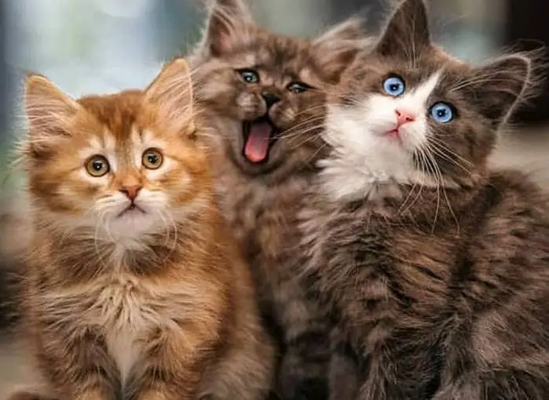

Adoção responsável
Um encontro pode mudar duas vidas.
Conheça os gatos cadastrados no AdoCat, descubra suas histórias e encontre um novo companheiro.

@adocat.adocao
Instagram
Doar via Pix
adocat.adocao@gmail.com
AdoCat em números
Um retrato dos gatos cadastrados
Indicadores calculados a partir dos registros disponíveis no AdoCat.
Distribuição por sexo
Com base nos registros preenchidos.
Distribuição por faixa etária
A classificação depende dos dados cadastrados.
Os totais refletem os registros disponíveis na plataforma. Campos sem informação não são incluídos nas distribuições.
Gatos para adoção
Encontre seu novo amigo
Gatos exibidos diretamente do banco de dados do AdoCat. Use os filtros para conhecer os cadastrados.
Carregando gatos cadastrados...
Nenhum gato encontrado
Não há gatos cadastrados que correspondam à busca.
Jornada do animal
Do resgate ao novo lar
Conheça as etapas previstas para uma adoção responsável. Os pedidos online ainda não estão disponíveis nesta versão.
1
Resgate
Identificação do gato e registro de sua condição inicial.
2
Cuidados
Cuidados veterinários e avaliação das necessidades do gato.
3
Lar temporário
Acolhimento enquanto o gato aguarda uma família.
4
Adoção
Conversa com os responsáveis e análise do interesse na adoção.
5
Novo lar
Encaminhamento responsável e atualização do status no AdoCat.
Faça parte
Existem muitas formas de ajudar
Além da adoção, iniciativas de proteção animal podem contar com doações, lares temporários e trabalho voluntário. Essas inscrições ainda estão em desenvolvimento.
Doação
Apoie iniciativas de proteção animal com ração, medicamentos ou recursos. O recebimento de doações online ainda não está disponível.
Lar temporário
Receba um animal por um período e ajude a liberar espaço para novos resgates.
Voluntariado
Participe com transporte, divulgação, eventos ou outras atividades da organização.
Perdidos & encontrados
Relatar um animal
Encontrou um gato perdido?
Viu um gato em possível situação de abandono em Matão – SP? Envie um relato para avaliação da equipe.
Mapa demonstrativo
Gatos encontrados em situação de abandono em Matão–SP
O mapa reúne locais aproximados onde gatos foram identificados em situação de abandono. Os registros são apresentados para apoiar a conscientização e a proteção animal. Por segurança e privacidade, os marcadores não indicam endereços exatos.
Mapa demonstrativo: marcadores e perfis fictícios; não representam ocorrências reais.
Seu próximo companheiro pode estar aqui.
Conheça os gatos cadastrados no AdoCat e descubra a história de cada um.